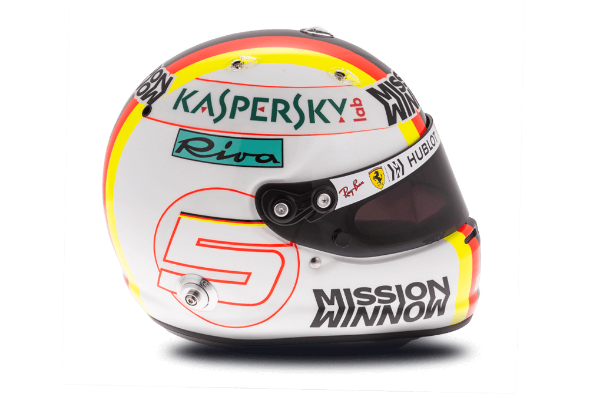

5 
Sebastian Vettel

| Team | Ferrari |
| Country | Germany |
| Podiums | 111 |
| Points | 2767 |
| Grands Prix entered | 222 |
| World Championships | 4 |
| Highest race finish | 1 (x52) |
| Highest grid position | 1 |
| Date of birth | 03/07/1987 |
| Place of birth | Heppenheim, Germany |
Biography
Born and raised a Bull, but now very much a Prancing Horse, F1's poster boy of early achievement had won more than all but two drivers in history by the time he was just 26, including back-to-back world titles between 2010 and 2013.
Vettel’s trademark is pure pace – and of course his one-finger victory salute. In the chase to the chequered flag, he likes to lead from the front and just like his hero, Michael Schumacher, Vettel has settled in as a race-winning leader at Ferrari.
But for all his competitive streak, Vettel has a playful side too and has been known to let loose with a spot of Beatles karaoke - and baby can he drive a car. Alongside his four world crowns he can boast more than 50 pole positions and race victories, ranking him – statistically - above many of the biggest names in F1 history. No wonder then that he was hand-picked to return Grand Prix racing’s oldest team to glory.
Since his move to Maranello, Vettel’s rivalry with Lewis Hamilton has intensified. Opposites off track – Hamilton leading a glamorous public life while Vettel is a private family man – the duo are evenly matched on Sundays as they bid not just for more world titles, but to be hailed the best of their generation.